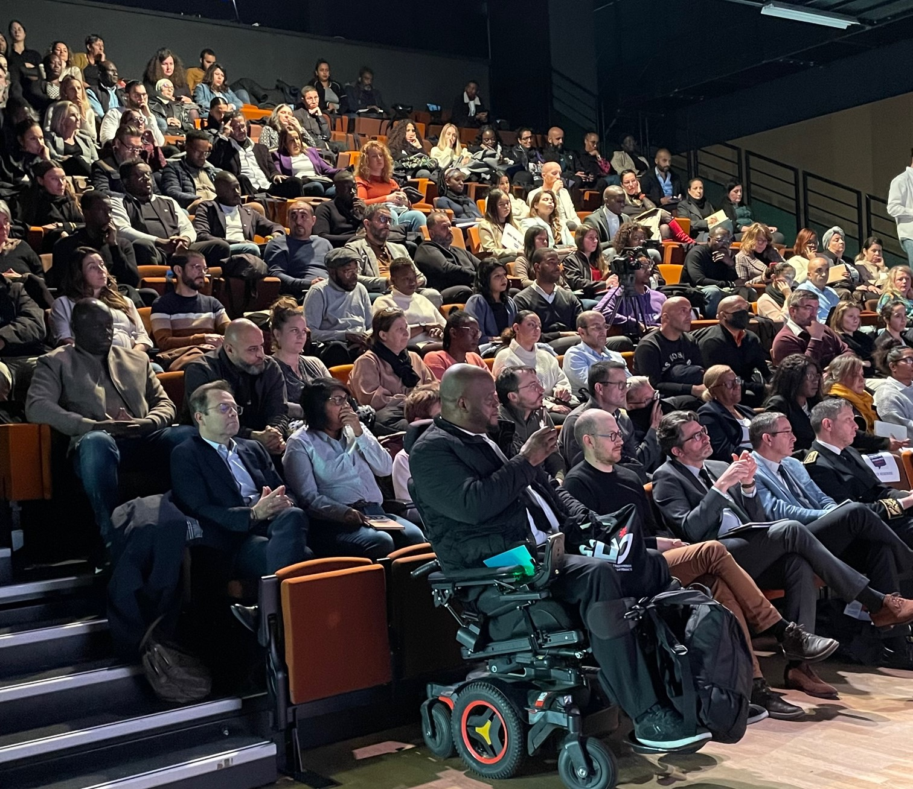

L'association
A propos de nous :
Notre histoire
Créé en 2021 sous l'impulsion de trois directeurs, le Collectif des directeurs(trices) jeunesse d'Île-de-France, association régionale, loi 1901, est un lieu de réflexion et d'échanges sur les politiques jeunesse. Il est composé de directeurs et directrices jeunesse de toute l'Île-de-France, engagés pour les jeunesses.
Notre identité
Le collectif a vocation à assurer un rôle d'interlocuteur avec les services de l'état, les acteurs jeunesse et intervenir/interagir sur l'ensemble des questions, des enjeux qui gravitent autour de la Jeunesse, il plaide pour la participation systématique des acteurs concernés dans la réflexion et l'élaboration des politiques publiques (formations des acteurs, expérimentations, dispositifs...).
Nos valeurs
Comme l'Education populaire, les valeurs du CDJ ne sont pas neutres mais militantes. Le collectif souhaite œuvrer à favoriser les valeurs d'émancipation, de coopération, d'équité, d'égalité, de solidarité et de justice. Sa volonté est de participer, aux côtés des acteurs de l'Éducation populaire, de contribuer à l'émancipation civique, intellectuelle des individus, de promouvoir la jeunesse au cœur des politiques éducatives et de ses dispositifs.
Le CDJ : pour qui et pourquoi ?
Pour qui ?
Le collectif s'adresse prioritairement aux professionnels en charge de la mise en œuvre des politiques jeunesse au cœur d' une collectivité (les Directeurs. trices Jeunesse, responsables, chef.fes de service...) en Ile-de-France. Cependant, tous les acteurs jeunesse peuvent contacter le CDJ IDF afin d'évoquer des sujets sur les politiques jeunesse.
Pourquoi ?
Notre existence est motivée par la mutualisation des ressources et des connaissances, l'échange d'expériences professionnelles fructueuses et le changement de perspective sur la jeunesse. Un exemple concret de notre impact est la transformation des politiques locales de jeunesse, résultant de notre plaidoyer actif en faveur de la participation des jeunes et des professionnels dans la formulation des politiques publiques.
Nos missions
Interpeller
Interpeller les pouvoirs publics et être force de proposition sur les politiques publiques à destination de la jeunesse.
Construire
Construire collectivement des positions communes, en s'appuyant sur l'expertise de ses membres et les remontées du terrain.
Participer
Participer activement à l'élaboration des politiques à destination des jeunes, en privilégiant une approche transversale et en participant aux instances de concertation mises en place par les pouvoirs publics.
Fédérer
Fédérer les acteurs de la jeunesse en encourageant la collaboration et la synergie entre les différents acteurs.
Nos actions
Accompagner les adhérents
Accompagner les adhérants dans la réalisation de leurs projets, de l'idée jusqu'à son aboutissement. Le collectif jeunesse à une vocation pédagogique.
Organiser des temps d'échange
Organiser des rencontres entre professionnels de la jeunesse (temps de travail, autoformation, séminaires, évènementiel, …) et développer des espaces d'échanges en proposant des webinaires thématisés.
Réaliser et partager des outils
Réaliser des audits, des diagnostics de territoires sur les politiques jeunesse auprès des collectivités et donner accès à des outils ressources (documents partagés sur un drive, padlet, …)
Prendre des initiatives
Être à l'initiative de démarches recherche-action et mise en place de colloques sur différentes thématiques.